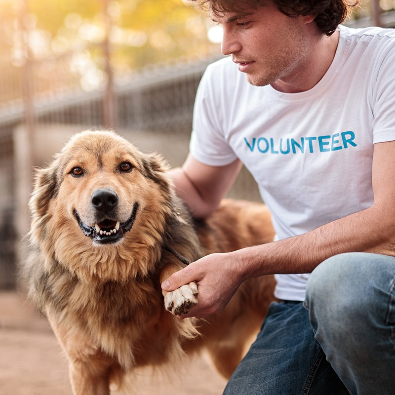

Adoption, Foster, and Volunteer Programs
We match people with the role that fits their home, schedule, and experience. There is no online checkout. Start with the overview below, then send an interest form on the Contact page.

Adoption Process
Adoption is how a foster pet becomes a family member and how we open a new foster space for the next intake.
- Browse current pets on our social channels or ask a coordinator which dogs and cats are ready for a meet-and-greet.
- Submit an adoption inquiry so we can talk about your household, other animals, and daily routine.
- Meet the pet in the foster home or at a weekend adoption event in the Twin Cities.
- Complete a home conversation, review medical records, and sign the adoption agreement.
- Take your new companion home with starter food, vaccine records, and a follow-up check from our team.
Adoption fees help cover intake exams, vaccines, spay or neuter surgery, and microchips. Exact amounts vary by age and medical need and are shared before you commit.
Foster Program
Twin Cities Animal Rescue is foster-based. We can only take in as many animals as we have spare bedrooms, crates, and couches.
Typical foster stays last two to eight weeks and may include:
- Short-term medical recovery after surgery
- Bottle-baby or nursing-litter care
- Behavioral decompression for shy or overstimulated pets
- Hospice or senior comfort care
We provide food, litter, crates, and veterinary care. You provide a quiet place, daily updates, and transport to scheduled appointments when you are able. Fosters must live within about 60 miles of Minneapolis or Saint Paul and be able to email our coordinators.
Volunteer Roles
Not every helper can host a pet. These roles keep the rescue moving when foster homes are full.
- Transport: Drive animals between clinics, foster homes, and adoption events.
- Event support: Set up meet-and-greet tables, answer visitor questions, and keep animals calm in public spaces.
- Application help: Reply to adoption and foster emails and schedule home conversations.
- Photo and story support: Take clear photos and write honest bios so the right family finds each pet.
Training is provided. Tell us your availability and comfort level with dogs, cats, or both on the interest form.